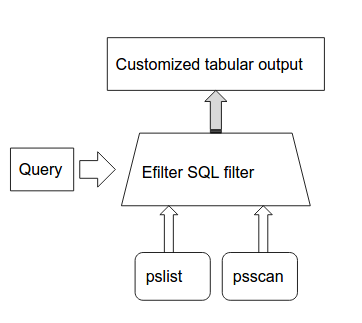
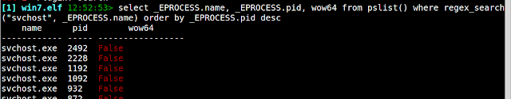
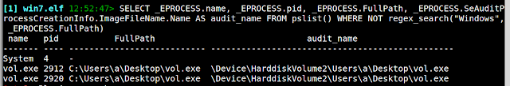
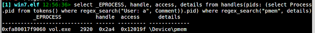
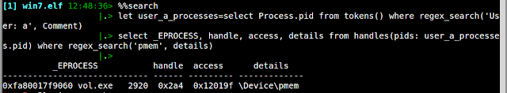

Rekall searching memory
This article was copied from the Rekall Forensics blog, posted on 2016-07-01. Copied with permission for historical preservation.
This blog post covers the new searching capability in the latest Rekall release (Starting from Rekall 1.5.2). The searching capabilities in Rekall are powered by the Efilter project.
Customizing plugin output
Rekall is a plugin based framework. This means that Rekall comes with many plugins written by different contributors. For example, one of the most popular plugins is the pslist plugin. We can see some help about the pslist plugin by following it with a question mark (?).
We can see that by default, the plugin can filter the output by PID, or process name. These filters are common to all plugins which deal with processes. For example, suppose we want to only see the svchost.exe processes.
The pslist plugin has a typical tabular output. There are a number of columns which were pre-chosen by the plugin author, such as the address of the _EPROCESS struct, the process name, the PID etc.
This information is most useful, however, we don't have a way to customize the output much past those columns hard-wired into the plugin. For example, we might want to also sort the output based on the start time, or PID or something else.
How can we do this? The solution is implemented by the Efilter library and the search plugin implemented in Rekall.
Efilter and the search plugin
Efilter is a filtering framework which implements an SQL-like search language. This approach is not new. For example other tools (such as Volatility) can produce output into sqlite tables, which can subsequently be filtered using SQL.
The main difference with the Efilter approach is that Efilter does not actually use pre-extracted data, but rather runs Rekall plugins on demand automatically in order to satisfy each query. As we see below, this allows queries to inspect data which was never even exported directly by the plugin - giving a complete and flexible interface for inspection of analysis results.

The general search process is illustrated above. Efilter analyzes the query to figure out which plugins will be run, then the output from these plugins is fed into the Efilter framework where the specified filters are applied. The query can specify a set of columns to display (and possibly their sorting order). The result is a customized tabular output governed by the specified query.
Here is a trivial example:
select * from pslist()
In this example we simply select all the output from the pslist() plugin (using the SQL * specifier). Efilter simply runs the pslist plugin and outputs all the rows produced by the plugin with no filtering. The output is also identical to the pslist plugin.
In the above query, Efilter just re-emitted all the columns emitted by the plugin but we can pick and choose some of the columns. Before we can filter and select some columns from the pslist plugin, we need to know exactly what type of output the plugin is producing. The column names are human readable and may not always correspond to the specific name of the column itself.
We use the describe plugin to describe the output of the pslist plugin in much the same way that the SQL describe statement describes a table.
Next to each field, we see the type of the field. This gives us an idea of what type of filtering operation is possible with this field. For example, let's display only the wow64 processes and show which session they are running in. The wow64 field is a boolean field so we simply evaluate it in the where clause:
select _EPROCESS, session_id, wow64 from pslist() where wow64
If you look closely at the output you might notice that the _EPROCESS column is actually split into 3 different columns, the virtual address, the process name and the process PID. Similarly in the output of "describe pslist" above there is no specific column for the process name or PID - all we see is a single _EPROCESS column with a type of _EPROCESS.
What is going on? How can we select only the process name?
When a plugin emits a more complex type (in this case the plugin emits raw _EPROCESS objects), Rekall might employ a specialized renderer (or a customized output format) for this columm. In this case a single _EPROCESS object is shown as a small table with three columns. However, Efilter actually sees the raw object itself. Therefore as far as the search plugin is concerned the pslist plugin emits raw _EPROCESS objects for each row.
We can use this fact by dereferencing fields inside the _EPROCESS object itself within a search query. Let us repeat the "describe pslist" plugin, but this time we tell it to show sub fields to a depth of 1 (In this screenshot we snipped many of the fields because the output is long. The plugin actually shows all the members of the _EPROCESS struct, as well as Rekall defined pseudo-members and properties.):
We can see that the _EPROCESS object itself contains many fields, and they can all be used as filtering targets, columns and sort orders. Here is something a bit more complex:
select _EPROCESS.name, _EPROCESS.pid, wow64 from pslist() where regex_search("svchost", _EPROCESS.name) order by _EPROCESS.pid desc

Here we sort by PID in reverse and show all the processes which match "svchost.exe" as well as their Wow64 status. Note that the built in search function finds the case insensitive regular expression anywhere in the filename.
Being able to drill into the objects returned by plugins allows users to invent completely different tables, even extending the output the original plugin was not designed to produce.
For example, closer inspection of the _EPROCESS object (either with the describe plugin or the dt plugin) reveals that extra information is present in the _SE_AUDIT_PROCESS_CREATION_INFO struct produced by the windows auditing system. We also see a FullPath member on the _EPROCESS object (This is actually a virtual member added by Rekall which displays the full path to the binary running the process). Let's find all the processes which were started from locations other than the Windows directory and also show the audit system's record of where they were started:
SELECT _EPROCESS.name, _EPROCESS.pid, _EPROCESS.FullPath, _EPROCESS.SeAuditProcessCreationInfo.ImageFileName.Name AS audit_name FROM pslist() WHERE NOT regex_search("Windows", _EPROCESS.FullPath)

Note the use of the regex_search() function applies a regular expression to a match, the use of the not operator to exclude this match and the use of the as operator to rename a column to a more meaningful name.
NOTE: Efilter currently provides the =~ operator for a regular expression match, however this matching is case sensitive. When matching windows file names we never want a case sensitive match or we might miss some filenames which should match. Therefore it is always preferable to use the case insensitive regex_search() function instead.
Subqueries
Sometimes it is useful to take the result of one search and apply it as an input to another plugin. Efilter supports this concept as a subquery. For example, suppose we asked - which processes were launched by a particular user? There is already a plugin which tells us this - the tokens() plugin:
select * from tokens() where regex_search("User: a", Comment)
We could also select by Sid but Rekall already resolves the Sid to a username for us. Now we would like to know which of these processes holds an open handle to the pmem driver?
select _EPROCESS, handle, access, details from handles(pids: (select Process.pid from tokens() where regex_search("User: a", Comment)).pid) where regex_search("pmem", details)

The above example is a bit hard to follow because it is all on one line and has a subselect clause. Efilter also allows us to save entire queries and therefore make the query more readable. To make this easier we can use the %%search magic command in the Rekall shell. This allows us to write more complex, multi-line queries:
[1] win7.elf 20:37:02> %%search
let user_a_processes=select Process.pid from tokens() where regex_search('User: a', Comment)
select _EPROCESS, handle, access, details from handles(pids: user_a_processes.pid) where regex_search('pmem', details)

How does this work?
The let assignment stores a query at the variable user_a_processes. Note that it does not execute the query at this point yet. A stored query is simply a table with columns and rows:
- In this case there is only one column called "pid" and several rows.
- The next query executes the handles plugin and provides the stored query to the "pids" parameter. Since the query is just a table, we need to choose which column to expand into the PIDs arguments (this is the purpose of the second ".pid"). Now the plugin will receive a list of PIDs to operate on.
- The output from the handles plugin (restricted by the PIDs selected by the first query) is further filtered for a file handle matching "pmem"
Note that we could have just run the handles() plugin without arguments and filtered on the output but this would have been inefficient because Efilter will need to list all the handles for all the processes and then filter out those processes we don't care about. It is always important to try to reduce the total number of processes examined first off by providing good process selectors to plugins which take them. Efilter does not currently have a good feel as to the cost of running each plugin so it is up the user to decide which order the queries should be run in and how the output is to be combined.
In this blog post we have demonstrated how EFilter queries are useful to tailor exactly the output you need from Rekall plugins. In the next blog post we will discuss how to harness this power in formulating and recovering forensic artifacts for memory images.